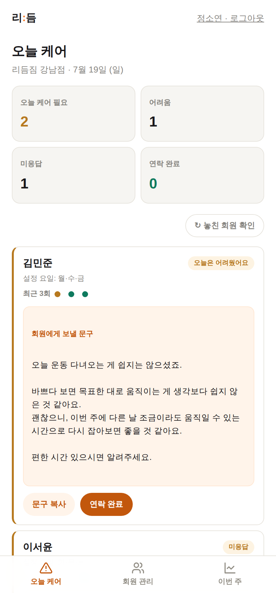
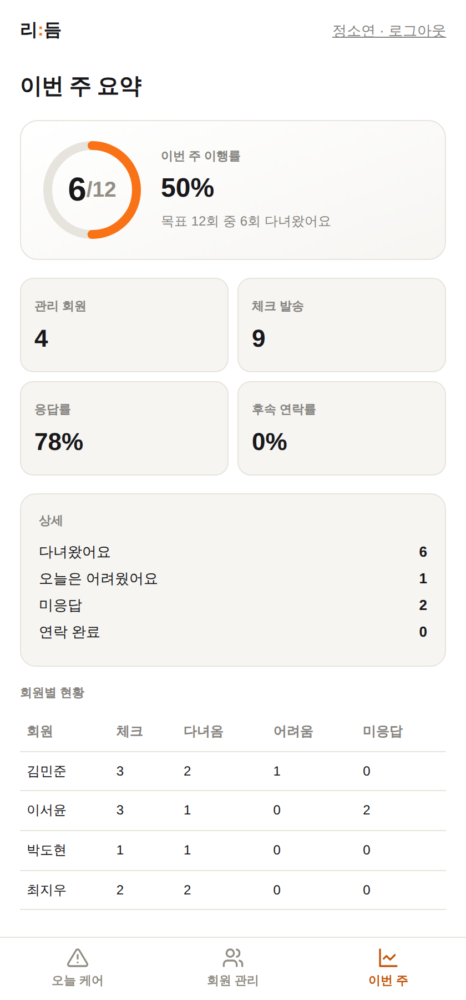
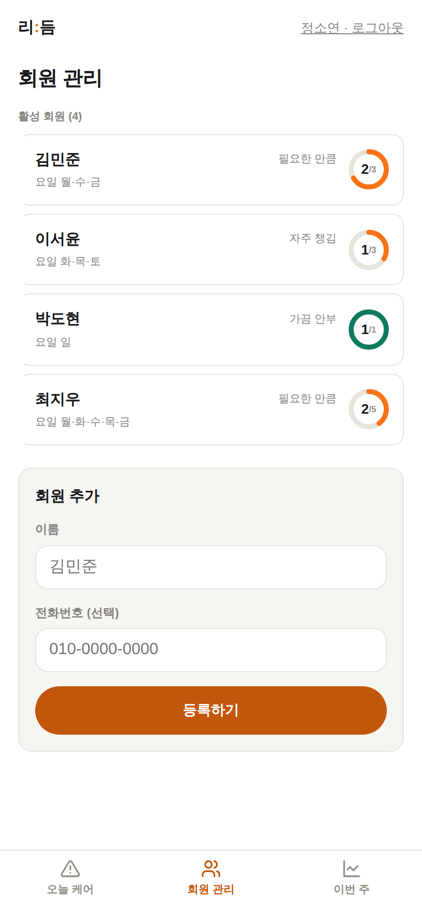
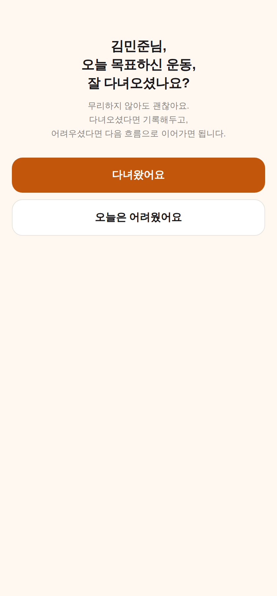
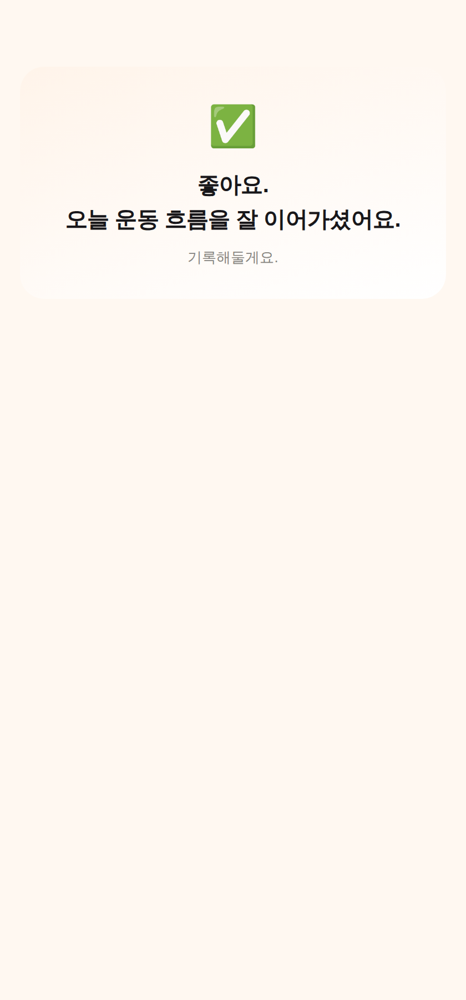
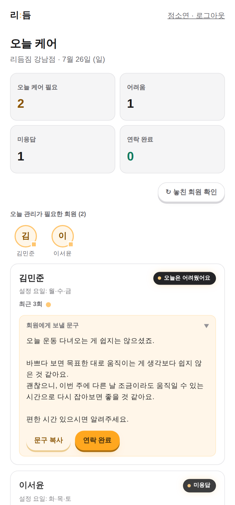
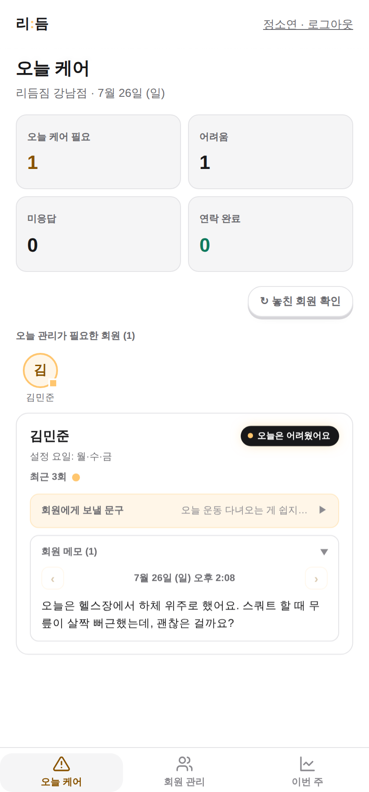

회원이 매일 카톡으로 남기는 짧은 응답을 리:듬이 지켜보다가,
지금 확인이 필요한 회원만 골라 알려드립니다.
회원은 앱을 깔 필요가 없고, 트레이너는 그 목록만 확인하면 됩니다.



챙기는 게 중요한 걸 몰라서가 아닙니다.
회원이 늘수록, 한 사람 한 사람을 챙길 시간이 구조적으로 부족해질 뿐입니다.
회원 확인에 매일 짧게는 30분, 많게는 몇 시간까지. 회원 수가 늘수록 감당이 어려워집니다.
회원마다 상황이 달라 문구를 새로 써야 하고, 바쁠 때는 결국 연락이 뒷전으로 밀립니다.
어렵게 먼저 연락해도 답장이 없거나 늦어서, 지금 그 회원 상태를 알 방법이 없습니다.
체크 발송은 리:듬이 자동으로, 실제 연락은 트레이너가 직접. 역할이 분명합니다.
설정한 요일·빈도에 맞춰 카카오톡으로 링크가 전달되고, 회원은 앱 설치 없이 "다녀왔어요 / 오늘은 어려웠어요"만 누릅니다.
자동 발송응답이 없거나 "어려웠어요"를 누른 회원, 반복해서 미응답인 회원을 리:듬이 자동으로 "오늘 케어" 목록에 올립니다.
자동 감지상황에 맞게 자동 생성된 연락 문구를 확인하고, 그대로 복사해 회원에게 먼저 연락합니다.
트레이너가 직접좌우로 스크롤하거나 화살표를 눌러보세요 (실제 서비스 화면)




회원은 앱을 깔 필요 없이 익숙한 카카오톡에서 버튼만 누르면 끝입니다.
어려움을 겪었거나 응답이 없는 회원을 리:듬이 먼저 찾아 알려줍니다.
어려움·미응답·반복 미응답 상황에 맞는 문구를 자동으로 만들어줍니다.
회원별·전체 회원의 이번 주 이행률을 한눈에 보여주는 원형 링, 리:듬의 시그니처 화면입니다.
현직 트레이너·센터 대표 인터뷰에서 가장 많이 나온 기대 효과를,
순서 그대로 담았습니다.
문구를 고민하고 일일이 확인하던 시간이 줄어듭니다.
그만큼 원래 놓쳤을 회원까지 챙길 여력이 생깁니다.
회원은 "먼저 챙겨주는 트레이너"로 느끼고, 수업 만족도로 이어집니다.
재등록 상담이 쉬워지고, 신규 상담에서 관리 체계를 보여줄 근거가 됩니다.
위 내용은 사전 인터뷰에 근거한 기대 효과이며, 파일럿을 통해 함께 검증해 나갑니다.
정식 출시 전, 여러 트레이너와 센터 대표님께 직접 현장의 불편한 점을 여쭤봤습니다.
리:듬의 모든 기능은 그 대화에서 시작됐습니다.
현직 트레이너·센터 대표님을 만나, 무엇이 가장 불편한지 여췤봤습니다.
다수가 이 두 가지를 가장 큰 어려움으로 꼽았습니다.
회원을 압박하지 않는 표현. 리:듬이 지키는 원칙이 됐습니다.
아직 실사용 후기가 쌓이는 단계라, 지어낸 후기나 수치 대신 실제로 들은 이야기를 그대로 전합니다.
지금은 파일럿 참여 트레이너를 모집하고 있습니다. 함께 만들어갈 초기 참여자를 기다립니다.
파일럿 진행 상황에 맞춰 순차적으로 안내드립니다.